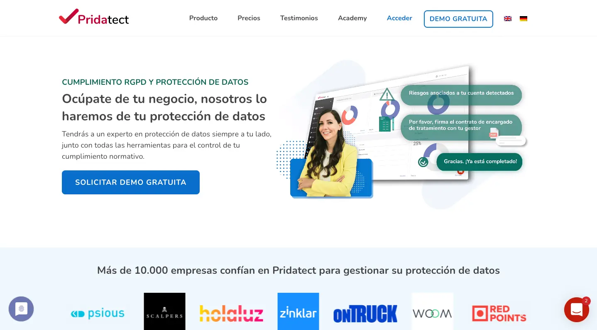

www.pridatect.com
Desde
Pridatect perseguía el objetivo de gestionar de forma amigable y segura la protección de datos de una empresa. Como Product Designer, me encargo junto al Product Manager de definir y diseñar las líneas generales de navegación y uso de la aplicación, bocetar interfaces y diseñarlos en Figma y coordinar con el equipo de front end la implementación de los diseños e interacciones en la aplicación.
